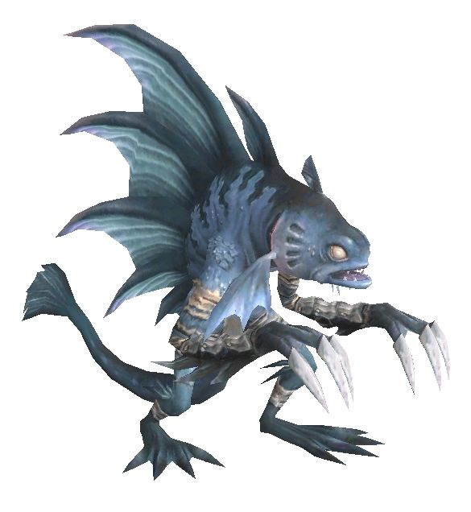

Level 75 reference · Zenith rules
These amphibious beastmen reside mainly on the western coastline of the island of Elshimo. They spend the majority of their time practicing primitive fishing techniques to provide an ample supply of shellfish for their survival. Other than to protect their territory, the Sahagin rarely interact with other races. Before the Great War, they adamantly refused invitations by the Shadow Lord to join the beastmen armies—until he convinced them that the steamships of Bastok would eventually destroy their environment. During the war, the Sahagin used their sea maneuvering abilities to attack even the strongest ships in the allied fleet, and were feared by all seafaring soldiers. After the flames of battle had been extinguished, the Sahagin cut off all ties to the other beastmen and returned to their secluded way of life. Apart from limited trading with Norg--they often trade shellfish for metal trinkets salvaged by the pirates--the Sahagin have little contact with the outside world. It has been noted however that a few Sahagin reside with the Mamool Ja beastmen in the far east, taking on the Mamool name. These Sahagin are never really seen in combat with the Mamool, so the true relationship between them remains unknown.
Finally, many of the Sahagin worship the elements, and have made deities out of sea serpents and oddly shaped stones within their grotto. However, within their ranks are some who follow the teachings of the Goddess Altana.
General Information |
 Image source |


Special Attacks
| Special Abilities | Original and Zilart Areas | Aht Urhgan Areas | ||
| Spinning Fin: Area of effect damage, Stun effect | ||||
| Hydro Shot: Knockback water damage. Resets Enmity | ||||
| Bubble Armor: Shell effect | ||||
| Hydro Ball: Water damage and STR down. Ignores Utsusemi. | ||||
| Jumping Thrust: Similar to Dragoon's Jump, only used by Dragoon-class Sahagin. Does not "ready." | ||||
| Note: Notorious Monsters in this family may use all of the above and/or additional unique special abilities. | ||||
Notorious Monsters in Family

Monsters in Family
| Name | Level | Zone |
|---|---|---|
| Creek Sahagin | 34-38 | Yuhtunga Jungle (34-38) |
| River Sahagin | 34-38 | Yuhtunga Jungle (34-38) |
| Stream Sahagin | 34-38 | Yuhtunga Jungle (34-38) |
| Lake Sahagin | 36-39 | Sea Serpent Grotto (36-39) |
| Pond Sahagin | 36-39 | Sea Serpent Grotto (36-39) |
| Spring Sahagin | 36-39 | Sea Serpent Grotto (36-39) |
| Brook Sahagin | 41-48 | Sea Serpent Grotto (41-48) |
| Rivulet Sahagin | 41-48 | Sea Serpent Grotto (41-48) |
| Riparian Sahagin | 44-48 | Sea Serpent Grotto (44-48) |
| Bog Sahagin | 52-59 | Sea Serpent Grotto (52-59) |
| Marsh Sahagin | 52-59 | Sea Serpent Grotto (52-59) |
| Swamp Sahagin | 52-59 | Sea Serpent Grotto (52-59) |
| Coastal Sahagin | 62-72 | Sea Serpent Grotto (62-72) |
| Delta Sahagin | 62-72 | Sea Serpent Grotto (62-72) |
| Lagoon Sahagin | 62-72 | Sea Serpent Grotto (62-72) |
| Shore Sahagin | 62-72 | Sea Serpent Grotto (62-72) |
| Mamool Ja Frogman | 76 | Mamook (76) |
| Mamool Ja Diver | Mamook |

Adapted from Eden Wiki: Category:Sahagin · Contributors and history · CC BY-SA 4.0. Revision 3494. Layout, links and optional background text adapted for Zenith.
Articles
- Abyss Sahagin
- Bog Sahagin
- Brook Sahagin
- Coastal Sahagin
- Coral Sahagin
- Creek Sahagin
- Delta Sahagin
- Denn the Orcavoiced
- Fyuu the Seabellow
- Houu the Shoalwader
- Kappa Akuso
- Kappa Biwa
- Kappa Bonze
- Lagoon Sahagin
- Lake Sahagin
- Mamool Ja Diver
- Mamool Ja Frogman
- Marsh Sahagin
- Meww the Turtlerider
- Mouu the Waverider
- Novv the Whitehearted
- Ocean Sahagin
- Pahh the Gullcaller
- Pond Sahagin
- Qull the Shellbuster
- Riparian Sahagin
- River Sahagin
- Rivulet Sahagin
- Seww the Squidlimbed
- Shore Sahagin
- Spring Sahagin
- Stream Sahagin
- Swamp Sahagin
- Telchines Bard
- Telchines Dragoon
- Telchines Monk
- Telchines White Mage
- Voll the Sharkfinned
- Worr the Clawfisted
- Wuur the Sandcomber
- Yarr the Pearleyed